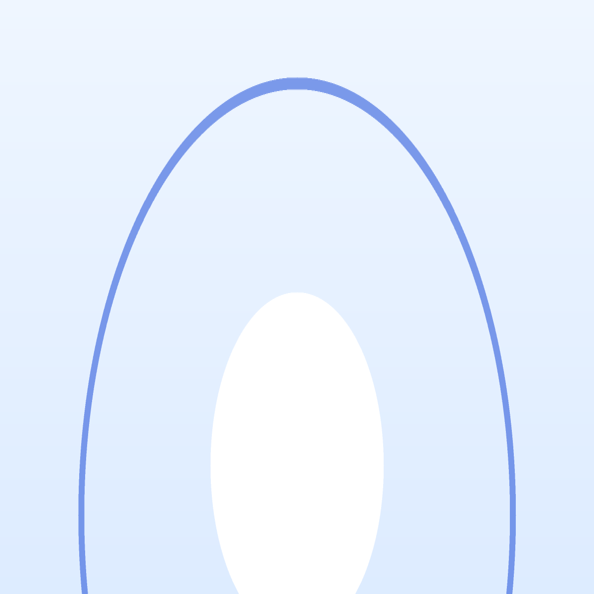

Tentang Saya

Saya mahasiswa Teknik Informatika di UIN Sunan Gunung Djati Bandung yang senang membangun perangkat lunak, dari tampilan antarmuka sampai logika di balik layar. Mempelajari cara kerja sebuah aplikasi dari ujung ke ujung adalah bagian yang paling saya nikmati dari dunia rekayasa perangkat lunak.
Di luar perkuliahan saya aktif bermain catur. Permainan ini melatih saya menyusun langkah beberapa langkah ke depan, kebiasaan yang ternyata juga berguna saat merancang dan menulis kode.
Fokus dan Minat
- Frontend
- Backend
- Catur
Biodata
Mata Kuliah Semester Ini
Semester Ganjil 2026/2027 · Teknik Informatika
Mata Kuliah Wajib
| No | Mata Kuliah | SKS | Hari | Waktu |
|---|---|---|---|---|
| 1 | Pemrograman Web | 3 | Selasa | 07.00–09.30 |
| 2 | Rekayasa Perangkat Lunak | 3 | Selasa | 13.00–15.30 |
| 3 | Basis Data | 3 | Rabu | 10.00–12.30 |
| 4 | Jaringan Komputer | 3 | Kamis | 07.00–09.30 |
| 5 | Sistem Operasi | 3 | Jumat | 07.00–09.30 |
| Total | 15 | SKS | ||
Mata Kuliah Pilihan
| No | Mata Kuliah | SKS | Hari | Waktu |
|---|---|---|---|---|
| 1 | Kecerdasan Buatan | 3 | Rabu | 13.00–15.30 |
| 2 | Keamanan Informasi | 2 | Kamis | 10.00–11.40 |
| Total | 5 | SKS | ||
Kontak
Ingin terhubung? Silakan lewat salah satu jalur berikut:- Email: putmarildav@gmail.com
- Kampus: uinsgd.ac.id